Chaos Based Encryption applied to stegoanalysis
Before diving deeper into the implementation and analysis of image fiel types, I would like to acknowledge Lazaros Moysis and his YouTube series on Chaos-Based Encryption. Youtube Channel: https://www.youtube.com/@lazarosmoysis5095
Each section of this article will feature one of his videos, along with a detailed explanation of its content. The goal is to provide a more detailed breakdown of the topics he covers, as well as possible scripts or implementations he might be using.
Understanding Image Functionality
How it is represented
To start understanding how an image is represented, the knowledge of a NxM matrix is needed.
$$ A = \begin{bmatrix} a_{ij} \end{bmatrix} $$ $$ \quad a_{ij} \in \mathbb{Z}, ; a_{ij} \in [0, 255], ; i = 1, \dots, N, ; j = 1, \dots, M $$ Every integer in the interval [0,255] can be represented usinng 8 bits, following the fundamentals of number theory:
$$ a_{ij} = a_{ij}^1 {{2^0}} + a_{ij}^2 {{2^1}} + a_{ij}^3 {{2^3}} + a_{ij}^4 {{2^4}} + a_{ij}^5 {{2^5}} + a_{ij}^6 {{2^6}} + a_{ij}^7 {{2^7}} + a_{ij}^8 {{2^8}} $$
Therefore, image creation involves manipulating a matrix, processing each pixel bit by bit. The following is an example:
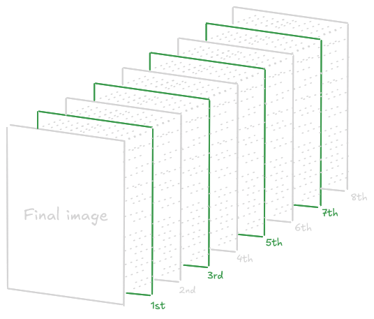 With a 4 pixel Image, it will follow the process:
import numpy as np
imageData = np.array([[0, 85], [170, 255]], dtype=np.uint8)
def extractBits(image):
height, width = image.shape
bitLayers = np.zeros((8, height, width), dtype=np.uint8)
for bit in range(8):
bitLayers[bit] = (image >> bit) & 1
return bitLayers
bitLayers = extractBits(imageData)
for bit in range(8):
print(f"Layer {bit + 1}:\n{bitLayers[bit]}", end='\n\n')Output:
Layer 1:
[[0 1]
[0 1]]
Layer 2:
[[0 0]
[1 1]]
Layer 3:
[[0 1]
[0 1]]
Layer 4:
[[0 0]
[1 1]]
Layer 5:
[[0 1]
[0 1]]
Layer 6:
[[0 0]
[1 1]]
Layer 7:
[[0 1]
[0 1]]
Layer 8:
[[0 0]
[1 1]]For greater clarity, each layer can be compared to the positional values of bits in a binary representation.
>>> print(bin(0))
0b0
>>> print(bin(85))
0b01010101
>>> print(bin(170))
0b10101010
>>> print(bin(255))
0b11111111PD: In the layers the first number goes to the back, and the last to the front, so the number 0babcdefgh in layers will be hgfedcba
Representation of Authentic Images
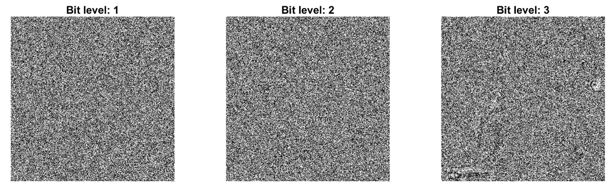
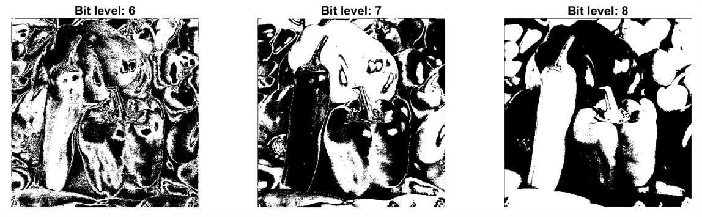
And all of this applies only to a black-and-white image. When working with full RGB color, things become more complex due to the increased amount of data. As a fun fact, when compressing an image, what you are doing exactly is to reconstruct the image from levels 5-8, 6-8, usually, obtaining the last 3 bits.
Python Script: RGB Process
To apply in RGB images replace the 8 bits to 24 bits, diving each 8 block bits for Red Green and Blue colors.
import numpy as np
imageData = np.array(
[
[ # R G B
[85, 170, 255],
[255, 255, 255]
],
[
[170, 85, 255],
[0, 0, 0]
]
],
dtype=np.uint8)
def extractBitsRGB(image):
height, width, channels = image.shape
bitLayers = np.zeros((8, height, width, channels), dtype=np.uint8)
for bit in range(8):
for channel in range(3):
bitLayers[bit, :, :, channel] = (image[:, :, channel] >> bit) & 1
return bitLayers
bitLayers = extractBitsRGB(imageData)
# Mostrar los resultados
for bit in range(8):
print(f"Red:\n{bitLayers[bit][:, :, 0]}",end='\n\n')
print(f"Green:\n{bitLayers[bit][:, :, 1]}",end='\n\n')
print(f"Blue:\n{bitLayers[bit][:, :, 2]}",end='\n\n')Once understood, the basics, we can proceed with the Chaos-Based-Image Encryption.
Chaos Based Image Encryption
Why to choose Chaos-Based Encryption?
Chaos-Based Encryption (CBE) are very sensitive with their seed, with a minimun change in the seed can cause a total diferent result, this can be very useful, to create dynamic keys or encrypted patterns with a low entropy. Making harder to decrypt with linear and diferencials attacks based on the correlations between input and output Mainly the CBE is used in multimedia content such as images, videos, audio and text, with a simple matemathical operations more than AES or RSA, can be run in a low cost hardware.
Furthermore in the Differential Cryptanalysis on Chaotic Based Image Encryption Scheme article from Lee Kong Chian Faculty of Engineering and Science, Universiti Tunku Abdul Rahman, 43000 Kajang, Selangor, Malaysia mentioned in the NPCR and UACI cryptoanalysis tests says:
The rapid development of computer network technology allows widespread transmission of multimedia data such as images and videos over insecure communication channels.> Therefore, a fast and secure image encryption method is deemed important to protect the multimedia data from being accessed by the unauthorized users. The traditional data encryption methods such as Data Encryption Standard (DES), Advanced Encryption Standard (AES) and International Data Encryption Algorithm (IDEA) are no longer suitable for image encryption due to the bulk data capacity and high data capacity. To overcome this drawback, different image encryption methods were proposed based on DNA [1,2], hash function [3], Substitution-box (S-box) [4] and chaotic maps [5–13].
On the other hand, it is true that traditionals methods like AES, RSA and ECC are well documented and standardized by organizations such us NIST. CBE being short of documentation complicating the implementation of such encryption. Furthermore in systems where is used the 32 bits may cause rounding errors (reducing security), if you configure it in a wrong way…
There can be specific attacks for these chaotic algorithms, such us: https://rac.es/ficheros/doc/01213.pdf or the mentioned before: Differential Attacks in CBE
def fun(x9,r,n):
x = np.zeros(n)
x[0] = x0
for i in range(1, n):
x[i] = r * x[i-1] * (1 - x[i-1])
return xDifferences Compared to Standard Cryptography
Something to keep in mind is the different technicalities between a chaotic system and a cryptographic algorithm.
graph TD
subgraph Crypto_Algo [Cryptographic algorithms]
CA1["Cryptographic algorithms"]
CA2["Phase space: finite set of integers"]
CA3["Rounds"]
CA4["Key"]
CA5["Diffusion"]
CA6["Security and performance"]
CA1 --> CA2 --> CA3 --> CA4 --> CA5 --> CA6
end
subgraph Chaotic_Sys [Chaotic systems]
CS1["Chaotic systems"]
CS2["Phase space: (sub)set of real numbers"]
CS3["Iterations"]
CS4["Parameters"]
CS5["Sensitivity to initial conditions"]
CS6["Unpredictability"]
CS1 --> CS2 --> CS3 --> CS4 --> CS5 --> CS6
end
Security Testing and Image Analysis
Below is a detailed explanation of several techniques used to assess the security of a chaotic system
Histogram Analysis
There are two mainly encryption methods with CBE:
- Permutation = Shuffling the pixels of the image
- Substitution = Changing the values of the pixel images
By reading this, you can think…
Is pixel permutation enough?
This is a very clear and brief question about the comparation between shuffling and encryption, and the fast answer is: no. Buy why is it not enought? Well, permutation only changes the positions of pixels, meaning that their values still the same. Furthermore permutation is inherently deterministic and reversible.
Reading and investigating I found the following conclusion:
$$ \forall a, b \in S,, \pi(a) = \pi(b) \Rightarrow a = b $$ $$ \forall y \in S,, \exists x \in S ; \pi(x) = y $$
A permutation is a bijective mapping, a one-to-one and onto function, from a set to itself. So the set of all permutations of n elemnts forms the symmetric group S. Since permutatinos are bijections, we can conclude they are invertible, being:
$$ \pi^{-1}(\pi(x)) = x $$ So the reversibility of permutations come from the permutations invertibles bijections from the group theory.
The group theory is the studies of algebraic structures know as groups. And says that a group is a set of elements and an operation that meets 4 other conditions:
- $\text{It is closed if a,b} \in G \text{, then }ab \in G.$
- $\text{It has an identity, if there is an } e \in G \text{ such that for all }a \in G : ea = ae = a.$
- $\text{Every elemnt has an inverse for all } a \in G \text{ there is a } b \in G \text{ suich that } ab = e.$
- $\text{Its operation is associative for all }a,b,c \in G : (ab)c =a(bc).$
If you want to learn more about group theory watch: https://www.youtube.com/watch?v=IRZK3Dq0OZM.
To conclude this section it is demostrated that permutation is a symmetric group and it can be inverted, being more insecure than encryption.
For checking, one part of the security of the encryption we can use the Histogram, which decipts the distributions of greyscale values. Images depicting information will have a non-uniform histogram.
The histogram of the original image and the permutated/shuffled iamge are the same while the substituted image are diferent, usually with a smaller variance…
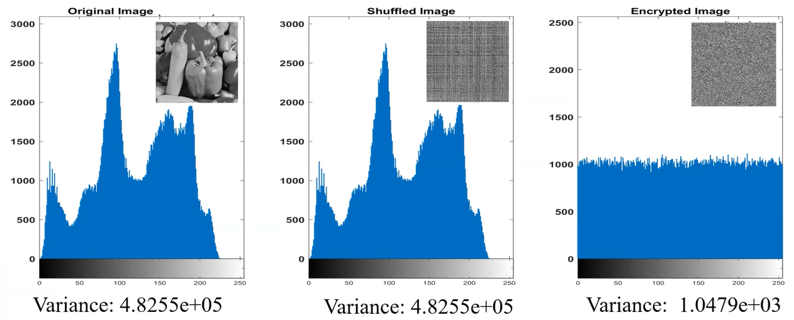
If you are treating with non-gray images, such us RBG formats, you will see a histogram for each color, here an example of original image in RGB and substituted/encrypted image in RGB:
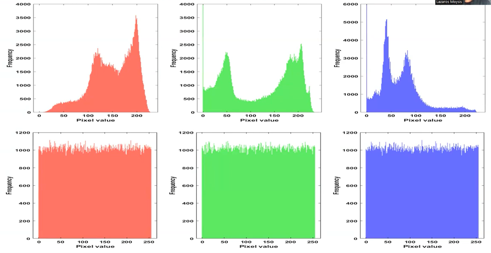
Pixel Correlation Analysis
Another method for testing the security is the Correlation, measuring similarity between adjacent pixels.
Adjacent Pixel refers to the pixel points in an image that are positioned next to each other. The correlation between adjacent pixels is used to evaluate the encryption effect, with original images showing strong correlations and encrypted images displaying little to no correlation among neighboring pixel points.
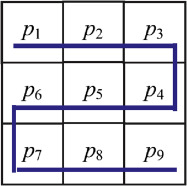
It can be used to asses the encryption effect, there are 4 main formulas to calculares this correlation between neigboring pixels:
E(x) - Expected value (Mean)
$$ E(x) = \frac{1}{N} \sum_{i=1}^{N} x_i $$ This formula represents the average value of the random variable x, with this information we are able to know the average color and brightness of the pixel, and can help us to detect if there are posibilities of a LSB (Least Significant Bits) stego method. E(x) is used in statistical prediction models and in some classification algorithms to normalize additional data for multimedia file types.
It gives us an idea of the central value of the data. In images, if the average is high, the image is generally bright, else the image is dark. To detect the diference we need to follow this simple formula:
$$ \Delta E = E(x_{\text{modified}}) - E(x_{\text{original}}) $$
Script in Sage (Python Interpreter)
Manual
Now we are going to recreate the formula in sage, for this we need to understand what is x and N:
- x represents the intensity of value of each pixel
- N is the amount of pixels in the image (width × height)
def E(x):
N = len(x)
return sum(x) / NOpenVC with Numpy
Anyways we have public modules with this imported… Using OpenVC and Numpy we can do the same function:
import cv2
import numpy as np
image = cv2.imread("image.png", cv2.IMREAD_GRAYSCALE)
meanValue = np.mean(image)
print(meanValue)Type 1 | Spatial Autocorrelation Example
Okay, perfect for the moment, but how we can use it, only having the suspicious file we can calculate the diference we mention before: $$ \Delta E = E(x_{\text{modificado}}) - E(x_{\text{original}}) $$ I will use the implementation of OpenVC and Numpy, but you can try to use the manual one:
import cv2
import numpy as np
image = cv2.imread("image.png", cv2.IMREAD_GRAYSCALE)
diffX = np.abs(image[:, 1:] - image[:, :-1])
meanX = np.mean(diffX)
diffY = np.abs(image[1:, :] - image[:-1, :])
meanY = np.mean(diffY)
print(f"Variantion axis X: {meanX}")
print(f"Variantion axis Y: {meanY}")Output:
Variantion axis X: 96.24803571428572
Variantion axis Y: 90.30474206349206Comparation of result
To check if it is a suspicious variation we need to compare with normal images, once we have a few examples we run this code, if Z-Score is between [-2, 2] we can consider a normal output, otherwise the image could be manipulated
import numpy as np
# Normal variances in images
variancesX = [95, 98, 100, 96, 92, 94, 99, 97, 101, 93]
variancesY = [90, 89, 88, 92, 94, 91, 93, 87, 95, 90]
meanX, stdX = np.mean(variancesX), np.std(variancesX)
meanY, stdY = np.mean(variancesY), np.std(variancesY)
varX = 96.24803571428572
varY = 90.30474206349206
ZscoreX = (varX - meanX) / stdX
ZscoreY = (varY - meanY) / stdY
print(f"Z-score X: {ZscoreX}")
print(f"Z-score Y: {ZscoreY}")Type 2 | Histogram Analysis
This method is simpler than the Spatial Autocorrelation but is less accurate, we create an Histogram taking the values of the pixeles (0-255) and with matplot we search for any peak/beak in the image…
import matplotlib.pyplot as plt
import cv2
image = cv2.imread("mia.jpg", cv2.IMREAD_GRAYSCALE)
hist = cv2.calcHist([image], [0], None, [256], [0,256])
plt.plot(hist)
plt.title("Histogram Intensity")
plt.xlabel("Intensity value (0-255)")
plt.ylabel("Frequency")
plt.show()Here are the results of two examples, honestly I don’t use and I don’t recomend anyone this method, but is good to know about it:
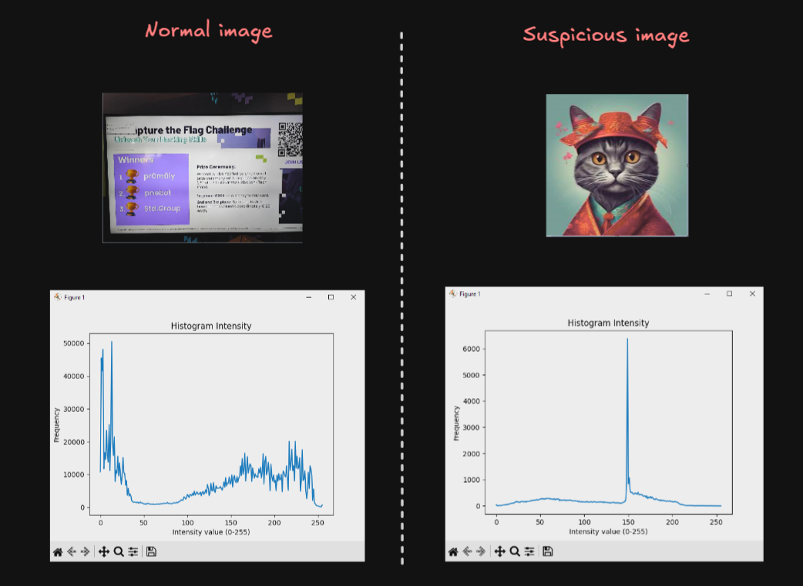
Type 3 | Local Average Analysis
import cv2
import numpy as np
import matplotlib.pyplot as plt
image = cv2.imread("uno.jpg", cv2.IMREAD_ANYCOLOR)
if len(image.shape) == 3:
image = cv2.cvtColor(image, cv2.COLOR_BGR2GRAY)
block_size = 8
h, w = image.shape
means = []
for i in range(0, h, block_size):
for j in range(0, w, block_size):
block = image[i:i+block_size, j:j+block_size]
means.append(np.mean(block))
plt.hist(means, bins=50, color='blue', alpha=0.7)
plt.title("Distribución de Medias por Bloques")
plt.xlabel("Media del Bloque")
plt.ylabel("Frecuencia")
plt.show()We can detect the bright of each range of pixels with their frequency…
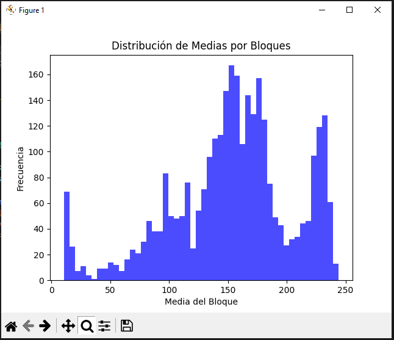
But anyways, the exhaustive analysis come in the followings formulas.
D(x) - Variance
$$ D(x) = \frac{1}{N} \sum_{i=1}^{N} (x_i - E(x))^2 $$
Full formula (Integration of Expected value):
$$ D(x) = \frac{1}{N} \sum_{i=1}^{N} (x_i - (\frac{1}{N} \sum_{i=1}^{N} x_i,))^2 $$ The variance trys to explain how far the values of a variable are from their expected mean. In terms of images, it shows us the intensity values of each pixel and its vary. This variance is mainly calculated in this part of the formula, inside the summation:
$$ (x_i - E(x))^2 $$ Being x the value of the pixel and E(x) the central value of the image. It is squared to avoid negative numbers, in case it may occur.
How to interpret the results (Theory)
It may be a high variance or a low one, here a poor definition and why it may happen.
High Variance:
When the values are widely dispersed from the average, can means a possible manipulation in the pixels, but can be a false flag, considering the following cases:
- High detailed image
- High color contrast
Low Variance:
Usually in monochrome images where the pixels are closely to the average value, meaning there is no alteration in the pixels, it also can occurs in:
- Blurred image
- Natural images, which follows a pattern
Script in Sage
Manual
from ExpectedValue import E
def D(x):
N = len(x)
def squareDIF():
for xi in x:
yield (xi - E(x))**2
return sum(squareDIF()) / NFor non-experience python programmers, the funcion squareDIF() using yield will return an array, known as *args, with the values of the summation, using this to avoid a oneliner such us:
return sum((xi - E(x))** 2 for xi in x) / NBut as yield can cause a call overhead, we will use list comprehensions, for more optimization:
import cv2
def E(x):
return sum(x) / len(x)
def D(x):
N = len(x)
return sum((xi - E(x)) ** 2 for xi in x) / N
def readIM(file):
img = cv2.imread(file, cv2.IMREAD_ANYCOLOR)
if img is None:
raise ValueError("File not found")
return img.flatten().tolist()
data = readIM('uno.jpg')
print("Variance:", D(data))Using this example we will obtain the following output:
Variance: 4225.138798415301OpenVC with Numpy
import numpy as np
import cv2
image = cv2.imread("uno.jpg", cv2.IMREAD_ANYCOLOR)
variance = np.var(image)
print("Variance:", variance)As output we will get:
Variance: 4225.138798416118Interpret results (Practice)
As we can see both codes give us the same output with an only difference of: $8.17 \times 10^{-13}$. As we are here to learning, we are going to compare how much time spend each program.
With the manual process:
Variance: 4225.138798415301
Execution Time: 0.142820 secondsWith the modules process:
Variance: 4225.138798416118
Execution Time: 0.008577 secondsWe can see, of course, the computer process of the numpy library is much faster than the manual one… so it is not effective as the Expected Value (mean).
I want to remember that with this information we are not able to get a 100% acurrate rate of knowing is an image suffers from LBS but can helps us to understand future advanced stego tools.
cov(x,y) - Covariance (Population Covariance)
$$ \operatorname{cov}(x, y) = \frac{1}{N} \sum_{i=1}^{N} (x_i - E(x))(y_i - E(y)) $$
Full formula (Integration of Expected value):
$$ \operatorname{cov}(x, y) = \frac{1}{N} \sum_{i=1}^{N} (x_i - (\frac{1}{N} \sum_{i=1}^{N} x_i))(y_i - (\frac{1}{N} \sum_{i=1}^{N} y_i)) $$
Covariance is the next level of Variance formula, where measures the relationship between two variables, usually horizontal and vertical pixels, showing how the vary together. There can be 3 types of results applying this formula:
- Positive Covariance - Direct relationship
- Negative Covariance - Inverse relationship
- Near Zero Covariance - Null relationship
This is a long and almost infinite content with a lot of diferent ways of calculating, but we are mainly focussed in the saga of videos, but here two usefulls reports to read:
- https://www.researchgate.net/publication/266333755_EMBEDDING_INFORMATION_IN_DCT_COEFFICIENTS_BASED_ON_AVERAGE_COVARIANCE/fulltext/54aea2820cf29661a3d39ee4/EMBEDDING-INFORMATION-IN-DCT-COEFFICIENTS-BASED-ON-AVERAGE-COVARIANCE.pdf
- https://hal.science/hal-02165866v1/document
When we talk about the covarianze of images, we focus on the pattern of change of two variables simultaneosly. This helps us to understand the differencies between satellite images in unlike bands, or the R and G channel of an RGB image…
To be honest, this a inmense and almost infinite world but as I would like this study to come to light someday, I will not go much deeper into these topic… since it is only an uncertain study to verify whether or not there is considered steganography, and we are not in the third video of twelve… (If you want to go deeper please contact me and we can study and understand it better)
Script in Sage
from ExpectedValue import E
def cov(x,y):
N = len(x)
r = 0
for i in range(N):
r += (x[i] - E(x)) * (y[i] - E(y))
return (1 / N) * rcov(x,y) - Sampling covariance
This is also a covariance but used for a fraction of the image, the formula we have seen is if the input data, the image, is the raw one, without modifications or trimming. If we have change the sample size the Sampling covariance will be more exactly that the Population. The formula varies in the way we write the denominator, we have seen: N but for this new type of covariance we will subtract one.
$$ \operatorname{cov}(x, y) = \frac{1}{N-1} \sum_{i=1}^{N} (x_i - E(x))(y_i - E(y)) $$
Both, the Latex formula and the Sage script, are almost the same.
from ExpectedValue import E
def cov(x,y):
N = len(x)
r = 0
for i in range(N):
r += (x[i] - E(x)) * (y[i] - E(y))
return (1 / (N - 1)) * rγ(x,y) - Pearson correlation coefficient
$$ \gamma(x, y) = \frac{\operatorname{cov}(x, y)}{\sqrt{D(x)} \sqrt{D(y)}} $$
Full formula (Integration of Variance + Expected value + Covariance):
$$ \gamma(x, y) = \frac{\frac{1}{N} \sum_{i=1}^{N} (x_i - (\frac{1}{N} \sum_{i=1}^{N} x_i))(y_i - (\frac{1}{N} \sum_{i=1}^{N} y_i))}{\sqrt{(\frac{1}{N} \sum_{i=1}^{N} (x_i - (\frac{1}{N} \sum_{i=1}^{N} x_i))^2)} \sqrt{(\frac{1}{N} \sum_{i=1}^{N} (x_i - (\frac{1}{N} \sum_{i=1}^{N} y_i))^2)}} $$
Also this formula can be spotted in google as: $$ r = \frac{\sum (x_i - \bar{x})(y_i - \bar{y})}{\sqrt{\sum (x_i - \bar{x})^2 \sum (y_i - \bar{y})^2}} $$
Pearson’s correlation coefficient is a statistical measure to quantify the linear relationship between two associated pixels. Used for the detection of possible modifications in an image caused by the insertion of additional information.
In the formula, in the numberer, the function cov(x,y) is a population covariance without normalization; and in the denominator will be the standard deviations without normalizing. But if you want to take a sample or a small fraction of the image you will need to normalizate both (but at the end of the day… there will be no changes, because the denominator where the normalization is located will be simplified), numberer and denominator, the numberer was mention before but the variance formula will result in:
$$ D(x) = \frac{1}{N-1} \sum_{i=1}^{N} (x_i - E(x))^2 $$ By writting down the “Sampling Pearson Correlation Coefficient” this big and complex formula will appear.
$$ \gamma(x, y) = \frac{\frac{1}{N-1} \sum_{i=1}^{N} (x_i - (\frac{1}{N-1} \sum_{i=1}^{N} x_i))(y_i - (\frac{1}{N-1} \sum_{i=1}^{N} y_i))}{\sqrt{(\frac{1}{N-1} \sum_{i=1}^{N} (x_i - (\frac{1}{N} \sum_{i=1}^{N} x_i))^2)} \sqrt{(\frac{1}{N-1} \sum_{i=1}^{N} (x_i - (\frac{1}{N} \sum_{i=1}^{N} y_i))^2)}} $$ Before simplifying the formula I want to mention that the standarization/normalization is the action of subtracting one to the amount of pixels in the (piece of the) image. If you have paid attention you will see that the expected value is not normalized, but why the rest of them are and this one is not?
The expected value (mean) is calculated by dividing the sum of the values by N (or by N if it is the population), and is not “normalized” in the same way. This is because in the Pearson Correlation or in Sampling Pearson Correlation the denominators will simplify, so they need to be in an equal status to be able to work correctly.
After that, we continue with the simplyfied formula. Starting with a variable change will be performed, instead of calling the sumatory of the expected value we are going to name it: \bar{x} and \bar{y}
$$ \bar{x} = E(x) = \frac{1}{N} \sum_{i=1}^{N} x_i $$ $$ \bar{y} = E(y) = \frac{1}{N} \sum_{i=1}^{N} y_{i} $$ Then canceling all denominator, that’s why you need to have Covariance and Variance in the same type, or normalizated/sampled or not, you will found the exact formula found in Google. $$ \gamma(x, y) = \frac{\sum (x_i - \bar{x})(y_i - \bar{y})}{\sqrt{\sum (x_i - \bar{x})^2 , \sum (y_i - \bar{y})^2}} $$ If we name properly the formula we will have $$ \gamma(x, y) = \frac{\operatorname{cov}(x, y)}{\sqrt{D(x)} \sqrt{D(y)}} $$
Script in Sage
from ExpectedValue import E
from Variance import D
from Covariance import cov
def r(x,y):
numberer = cov(x,y)
denominator = D(x) * D(y)
return numberer / denominatorInterpretting results
The outcome of this formula is inside the range of -1 and 1, depending on the proximity of each value: {-1, 0, 1}: $$ \gamma(x,y) \approx 1: \text{The relation between the pixels is strong and in principle does not suffer from manipulation} $$ $$ 1 > \gamma(x,y) \ge 0.1: \text{High probability that the image have been manipulated. If } \gamma = 0 \text{ there are not correlation between pixels from } x \text{ and } y. $$ $$ \gamma < 0: \text{The pixels are inversely proportional, also high probability of being manipulated.} $$ We have finish the Pixel Correlation Analysis, this is more focussed on how images work, but can help us in the detection of steganography, but I repeat my-self again, IT IS NOT ACCURATE.
Testing for Security
As all we have seen, we can study the correlation of pixels without a problem, having the comparation of 3 images:
- Plaintext
- Shuffled
- Encrypted
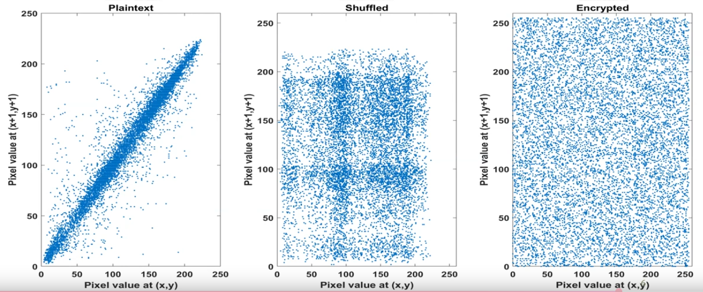
With their correlation:
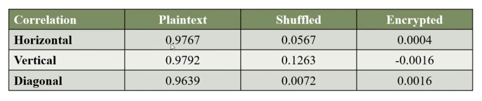
Entropy Analysis
Let us begin with the precise definition of entropy:
Computting entropy:
In computing, entropy is the randomness collected by an operating system or application for use in cryptography or other uses that require random data. This randomness is often collected from hardware sources, either pre-existing ones such as mouse movements or specially provided randomness generators.
Information theory entropy
In information theory, entropy is a measure of the uncertainty associated with a random variable. The term by itself in this context usually refers to the Shannon entropy, which quantifies, in the sense of an expected value, the information contained in a message, usually in units such as bits. Equivalently, the Shannon entropy is a measure of the average information content one is missing when one does not know the value of the random variable
The conclusion is that the enyropy is the amount of informatino and unpredictability/uncertainty present in an image. The highest theoretical value of the entropy is 8, the higher entropy denotes high unpredictability/uncertainity pixel correlation, being the higher, the safer. To continue a detailed explanation of the formula, with a main source of the survey of Computational entropy of Harvard.
Entropy formulas (Unidimensional)
$$ E = - \sum_{2i=0}^{2^L - 1} p_i \log_2 p_i $$
It mentions the measures of the entropy when X is a discrete random variable, the same thing that we are studying:
$$ H(X) = \mathbb{E}_{x \leftarrow X} \left[ \log_2 \left( \frac{1}{\Pr[X = x]} \right) \right] $$ At a glance, it seems to be a completed difference formula, but it is the same formula, but the implementation of some variable change are necesary, the expectation can be written as a sum over all possible values of x (in X).
$$ \mathbb{E_{x \leftarrow X}} = \sum_{ x \in \mathcal{X} } Pr[X = x] $$
In a correct notation. which will be not used, is writed as,
$$ \mathbb{E}|X| = \sum_{x \in \mathcal{X}} x \times Pr[X = x] $$
Pr[X = x] is the probability of the molecular proposition X has the value of the atomic proposition x.
After the variable chage, it will be a result of:
$$ H(X) = \sum_{x \in \mathcal{X}} {\Pr[X = x]} \left[ \log_2 \left( \frac{1}{\Pr[X = x]} \right) \right] $$
For convenience all possible values of x will be named as p, and the possible value of x equals i
$$ p_{i} = {\Pr[X = i]} $$
$$ H(X) = \sum_{i} {p_{i}} \left[ \log_2 \left( \frac{1}{p_{i}} \right) \right] $$
By properties of logarithms can be:
$$
H(X) = \sum_{i} {p_{i}} \log_2 \left( \frac{1}{p_{i}} \right) = \sum_{i}{p_{1}} \log_2 \left( {p_{i}} \right)^{-1} = -\sum_{i}p_{i} \log_{2} p_{i}
$$
Finally, considering the value of X are: i = 0,1,...,2L-1, where L is the number of possible binary values, with two possibles results, (1 and 0), the number of combinations could be calculated as: 2^L.
Demostrating the correlation of both formulas. $$ E = - \sum_{2i=0}^{2^L - 1} p_i \log_2 p_i $$ Now that the relationship is mentioned the following formulas can be understood. But before, the same formula scripped in Sagemath.
Sage Script
from math import log
def Entropy(L:list,E:float=0.0) -> float:
for p in L:
if p > 0:
E -= p*log2(p)
return Emin-entropy | Minimun
Formula
$$ H_{\infty}(X) = min_{x}\left[ \log_{2}\left( \frac{1}{Pr[X=x]} \right) \right] = \log_{2}\left( \frac{1}{max_{x} Pr[X=x]} \right) = - \log_{2} (max_{x} Pr[X=x]) $$
Sage Script
from math import log2
def H_Inf(X:list) -> float:
Pmax = max(X)
return -log2(Pmax)
max-entropy | Maximun
Also know as the Entropy of Hartley, uses the set-builder notation which obtains only the non-negativa values from the source predicate.
Formula
$$ H_{0}(X) = \log |{x : Pr[X=x] > 0}| $$
Sage Script
from math import log2
def H_0(X:list) -> float:
x=0.0
for xi in X:
if xi > 0:
x+=1
return log2(x) if x != 0 else 0.0Unimensional review
H(X) measures the average number of bits of randomness in X, while H_{infty}(X) and H_{0}(X) are worst-case lower and upper bounds on H(X). Indeed, we have:
$$ H_{\infty}(X) \le H(x) \le H_{0}(X) $$ $$ \text{with equalitity if and only if X is uniform on } {x : Pr[X=x] > 0} \text{ ; that is, X is a flat distribution} $$
But… all of this only for an unidimensional array, in terms of images, only the horizontal axis, so now, the full image, a bidimensional Shannon & Hartley Entropy will be shown. Before entering dellate, it is possible to flatten the image:
>>> import numpy as np
>>> image = np.random.random((3,3))
>>> print(image)
[[0.10002498 0.83730832 0.26422208]
[0.42196167 0.34551549 0.68976181]
[0.08653794 0.23869748 0.69132533]]
>>> flattenImage = image.flatten()
>>> print(flattenImage)
[0.10002498 0.83730832 0.26422208 0.42196167 0.34551549 0.68976181
0.08653794 0.23869748 0.69132533]If the array needs to be flattened and they not come from numpy the following function can be used:
flattenImage = [pixel for row in p for pixel in row]The results will be the same, a very good option to avoid complications. Also, this is only for greyscale images, for RGB scale, it is necesary to split the channels.
def splitI(image):
Rc = []
Gc = []
Bc = []
for row in image:
Rr = []
Gr = []
B_row = []
for pixel in row:
R, G, B = pixel
R_row.append(R)
G_row.append(G)
B_row.append(B)
R_channel.append(R_row)
G_channel.append(G_row)
B_channel.append(B_row)
return R_channel, G_channel, B_channel
imageRGB = [[(),(),(),()],[(),(),(),()],[(),(),(),()]]
R,G,B = splitI(image_color)Bidimensional Entropy Formulas
The main formula does not change in its mathematical principles; only the way we implement the code varies.
from math import log
def Entropy(L:list,E:float=0.0) -> float:
for row in L:
for p in row:
if p > 0:
E -= p*log2(p)
return EBidimensional min-entropy
Formula
$$ H_{\infty}(I) = min_{(x,y)}\left[ \log_{2}\left( \frac{1}{Pr[I(x,y)]} \right) \right] = \log_{2}\left( \frac{1}{max_{(x,y)} Pr[I(x,y)]} \right) = - \log_{2} (max_{(x,y)} Pr[I(x,y)]) $$
Sage Script
To simplify the problem, the use of numpy will be applied.
import numpy as np
from math import log2
def H_inf(I:list) -> float:
pMax = np.max(I)
return -log2(pMax)Remember that to use np.max() requires an np.array.
Bidimensional max-entropy
Formula
$$ H_{0}(I) = \log |{(x,y) : I(x,y) > 0}| $$
Sage Script
import numpy as np
from math import log2
def H_0(I:list) -> float:
c = np.count_nonzero(I >0)
return log2(c) if c != 0 else 0.0As the same as min-entropy it is required a numy array, if not use: flattenImage = [pixel for row in p for pixel in row]
Testing for Security
While using this scripts, setting the value of L as (8 bytes) the maximun value will be 8, like the following examples:
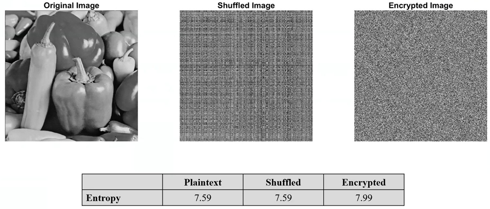
Maybe the image you are using could not be the same highest theoretical value, thats why the max-entropy function was explained. Before the survey is continued, I recommend take a look to the following pdf I have already mentioned, it is very good resource for learning Entropy:
Local Entropy
If you noticed, the Entroy has a little problem, the data “Plaintext” and “Shuffled”, have the same entropy level, causing a confusion…. That’s why local entropy is created. Consider a collection of non-overlapping blocks in a image, compute the entropy of each block and calculate the avegrage entropy of these entropies, to obtain the local entropy. You can consider N number of blocks with MxM size pixels.
$$ \lim_{ N \to \infty } = \frac{1}{N} \sum_{i=1}^{N} H(B_{i}) = H(X) $$
Furthermore, by the CLT (Central Limit Theorem), the estimation error usually decays as follows:
$$ |H(X) - \hat{H}_{N}| \propto \frac{1}{\sqrt{ N }} $$
Here a brief comparation:
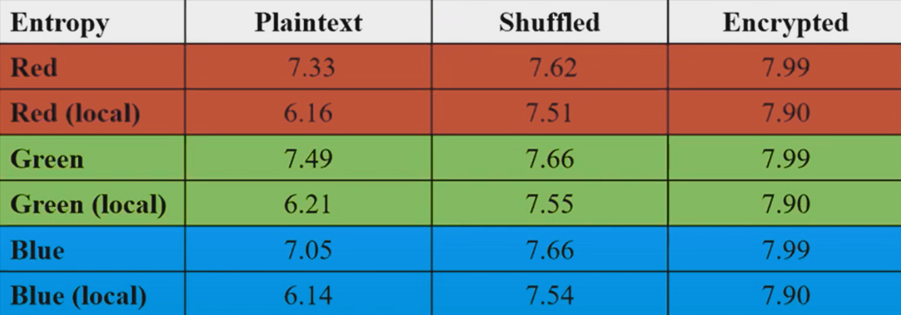
Python Script for Blocks
import numpy as np
import cv2
import random
from typing import List
def nonOverlappingBlocks(image: np.ndarray, blockSize: int, numberBlocks: int) -> List[np.ndarray]:
height, width = image.shape[:2]
blocks = []
usedPositions = set()
if blockSize > min(height, width):
raise ValueError(f"{blockSize} > (greater than) {height}x{width} (Image shape)")
maxAttempts = 100
attempts = 0
while len(blocks) < numberBlocks and attempts < maxAttempts:
x = random.randint(0, width - blockSize)
y = random.randint(0, height - blockSize)
overlaps = False
for (used_x, used_y, used_size) in usedPositions:
if not (x + blockSize <= used_x or x >= used_x + used_size or
y + blockSize <= used_y or y >= used_y + used_size):
overlaps = True
break
if not overlaps:
block = image[y:y+blockSize, x:x+blockSize]
blocks.append(block)
usedPositions.add((x, y, blockSize))
else:
attempts += 1
if len(blocks) < numberBlocks:
print(f"Maximun non-overlapped blocks: {len(usedPositions)}")
return blocksUse example:
if __name__ == "__main__":
imagePath = "image.png"
image = cv2.imread(imagePath)
if image is None:
raise FileNotFoundError(f"File not found: {imagePath}")
blockSize = 32
numberBlocks = 10
blocks = nonOverlappingBlocks(image, blockSize, numberBlocks)
for block in blocks:
print(block)NPCR & UACI Cryptanalysis
As It is mentioned in one of the first sections of this post, Chaos Based Encryption is typically prone to suffer cryptographic differentials attacks such as:
- Differential and Chosen-Plaintext Attacks (CPA)
- Boomerang y Rectangle Attacks
- Differential-Linear Cryptanalysis
- NPCR/UACI: Chosen-Plaintext Differential in encrypted images
- Differential Known-Plaintext Attacks in Chaotic PRBS
In this section the NPCR/UACI attacks will be spoken, anyways If it is precise a further explanation check the following PDF: https://arxiv.org/pdf/1910.11679, due you are reading a brief explanation of some important part of CBE, in the article mentioned you will find some conventional attacks e.g., chosen plaintext attack, known plaintext attack, and arguing the vulnerable encryption scheme for embedded systems based on continuous third-order hyperbolic sine chaotic system proposed by Z. Lin et al. in A novel fast image encryption algorithm for embedded systems.. Using:
$$ \ddot{x} + 0.75\dot{x} + x + 1.2 \times 10^{-6} \cdot x \sinh\left(\frac{\dot{x}}{0.026}\right) = 0 $$
Both tests are selected to measure the resistance of a proposed cryptosystem against the differential attacks introduced by Eli Biham and Adi Shamir in differential cryptanalysis of DES-like cryptosystems. Journal of CRYPTOLOGY, 4(1):3–72, 1991.
Number of Pixels Change Rate - NPCR
NPCR measures the percentage of pixels variations between two encrypted images when their corresponding cleartext images differ with only one pixel, with the purpose of evaluates the sensitive of the encryption system to small changes in the plain image. The higher the NPCR, the more noticeable the difference is proportionally, meaning the CBE systems works correctly.
Knowing this we can go into the formula:
$$ NPCR = \frac{\sum_{i,j}D(i,j)}{M \times N} \times 100% $$ Where:
- $D(i,j) = \begin{cases} 1 & \text{if } C_1(i,j) \neq C_2(i,j) \\ 0 & \text{if } C_1(i,j) = C_2(i,j) \end{cases} \text{ ; also }D(i,j) \text{ is the binary difference indicator and not the variance function of Pixel Correlation Analysis}$
- $C_{1} \text{ and } C_{2} \text{ are the two encrypted images}$
- $M \times N \text{ is the image dimensions}$
It is suposed to return a ~>99.5% or higher value to being a normal Chaos Based Encryption, we can know with the following Sage Script:
def NPCR(img1,img2):
M = len(img1)
N = len(img1[0])
if len(img2) != M or any(len(row) != N for row in img2):
raise ValueError("Images dimensions do not coincide")
variation = 0
for x in range(M):
for y in range(N):
if img1[x][y] != img2[x][y]:
variation+=1
return (variation / M*N) * 100It is also possible to apply the Pillow module:
from PIL import image
import numpy as np
def NPCR(imgPath1, imgPath2):
img1 = Image.open(image_path1).convert('L')
img2 = Image.open(image_path2).convert('L')
arr1 = np.array(img1)
arr2 = np.array(img2)
if arr1.shape != arr2.shape:
raise ValueError("Images dimensions do not coincide")
M, N = arr1.shape
D = arr1 != arr2
variation = np.sum(D)
return (variation / M*N) * 100Unified Average Changing Intensity - UACI
UACI is designed to test the number of mean intesities modified between two encrypted images (commonly used in interferograms), when the difference between the plaintext image is subtle the optimal value of UACI is ~33.46%, in other words UACI quantifies how much the variation of the pixel, which reflects the algorithm’s abilioty to spread differences uniformly across the image.
- Author anotation: While doing this part of the post I started thinking what was the relationship of the UACI tests with the Chaos Based Image, If you are reading this I am going to refresh you the meaning of a chaotic system, being the brutal variantion of encryption with a small differ in the seed/key/source of the system/algorithm. This tests, also for NPCR, evaluate the sensitive of the cypher at differentials attacks.*
$$ UACI = \frac{1}{M \times N} \sum_{i,j}\frac{|C_{1}(i,j)-C_{2}(i,j)|}{255} \times 100% $$ Where:
- $C_{1} \text{ and } C_{2} \text{ are the two encrypted images}$
- $M \times N \text{ is the image dimensions}$
As we mention earlier the perfect percent for this function is 33,46%, that indicates that the cryptographic algorithm and the chaos system is secure. To calculate the UACI from two cipher images use the following code:
def UACI(img1, img2):
M = len(img1)
N = len(img1[0])
if len(img2) != M or any(len(row) != N for row in img2):
raise ValueError("Images dimensions do not coincide")
variation:float = 0
for x in range(M):
for y in range(N):
diff = abs(img1[x][y] - img2[x][y])
variation += diff / 255
return (variation / M*N) * 100Hamming Distance - HD
To conclude this anti-plain-text sensitivity attack sention I want to talk about the not mention Hamming Distance function from Mousa Farajallah in Chaos-based crypto and joint crypto-compression systems for images and videos.
$$ HD(C_{1}, C_{2}) = \frac{1}{|Ib|} \sum^{|Ib|}{K-1} (C{1}(K) \oplus C_{2}(K)) $$ Where:
- $|Ib| = L \times C \times P \times 8$, is the size of thge image in bits
- $L$ is the number of rows in the image, also called $lines$
- $C$ is the number of columns in the image
- $P$ is the number of color planes channels
The optimun HD value is 50%. A good bloc cipher should produce an HD close to 50%. “Probability of bit changes, which means that a one bit difference in plain-image will make every bit of the corresponding cipher-image change with a probability of half” mentions Xingyuan Wang, Dapeng Luan, and Xuemei Bao. in Cryptanalysis of an image en-cryption algorithm using chebyshev generator. Digital Signal Processing, 25:244–247, 2014
Therefore, the plain-text sensitivity attack would become a useless attacking method.
To tests it use:
def HD(C1, C2):
L = len(C1)
C = len(C1[0])
if isinstance(C1[0][0], int):
P = 1
else:
P = len(C1[0][0])
totaBits = L * C * P * 8
variance = 0
for x in range(L):
for y in range(C):
if P == 1:
px1 = C1[x][y]
px2 = C2[x][y]
xored = px1 ^ px2
variance += bin(xor_result).count('1')
else:
for z in range(P):
px1 = C1[x][y][k]
px2 = C2[x][y][k]
xored = px1 ^ px2
variance += bin(xor_result).count('1')
return (variance / totalBits) * 100Creating Secure Chaos Based Systems
The next step is yours. In this paper we have seen what is a Chaotic System, what are they used for, some validity checking for being secure, but how to create one? What properties needs a algorithm to be consider a system? In this section we will get in-depth with some complex (at least for me) mathematical concepts.
Lyapunov exponent
First of all, we should mention Lyapunov exponent, which measures the rate at which an infinitesimally small distance between two initially close states grows over time, in other words, it measures exponential divergence.
To understand better the exponent think in two small balls, in the top of a hill, both are nearly the same distance apart, if the hill is smooth, flat, without any rocks you could calculate normaly the trajectory and predict that both will stop in the same space (being the initial space insignificant). This is a common dinamic system.
Only, in real life there are rocks, craters, around all the hill, making detours to the balls. Now, its harder to think that each ball will be nearly when they stop, this is how chaotic system works.
Formula
Thus, the Lyapunov exponent is formed as:
$$ F^{t}(x_{0} + \varepsilon) - F^{t}(x_{0}) \approx \varepsilon e^{\lambda t} $$
Being $\lambda$ the Lyapunov exponent. The left side is the distance between two initially close states after lost steps, and the right side is the assumption that the distance grows exponentially with time. $\lambda$ is measured by a long period time ideally $t \to \infty$. Also, $\epsilon$ are the rocks, craters with a minimun value $\epsilon « 1$ or $\epsilon = 10^{-6}$.
If $\lambda < 0$, the smalls distances are similar not consider a chaotic system. To clear the exponent follow:
$$ e^{\lambda t} \approx \frac{F^{t}(x_{0} + \varepsilon) - F^{t}(x_{0})}{\epsilon} $$
Being $\delta(t) = F^{t}(x_{0} + \varepsilon) - F^{t}(x_{0})$
$$ \lambda = \frac{1}{t} \ln ( \frac{\delta(t)}{\epsilon}) $$
Lastly, the limits:
$$ \lambda = \lim_{ t \to \infty ,\epsilon \to 0 } \frac{1}{t} \ln ( \frac{\delta(t)}{\epsilon}) $$
Once this is understood, let’s take the following POSSIBLE chaotic system: $f(x) = k \times x \times (x-1)$ and the linear map: $g(x) = x \times k$, where $k \text{ is cte}$ in both cases.
To calculate the exponent, use the following sage function:
import numpy as np
def lyapunov(mapFunction, x0, eps, idx, discard=100):
x=x0
xPert = x0 + eps
lyap = 0.0
for i in range(idx):
x = mapFunction(x)
xPert = mapFunction(xPert)
delta = abs(xPert - x)
xPert = x + eps * (xPert - x) / delta
if i >= discard:
lyap += np.log(delta / eps)
ei = idx - discard
return (lyap / ei)
def f(k):
return lambda x: k * x * (1 - x)
def g(k):
return lambda x: k * xTaking the following parameters:
- $\epsilon$ | eps = $10^{-8}$ | 1e-8
- x0 = 0.5
- idx = 5000
We obtain:
- $f(2) \approx -17.3998 $
- $f(4) \approx 1.3863$
- $g(0.5) \approx -0.6931$
To consider, the higher value for the iterations and the lower value for $\epsilon$ (initial pertubations) better success hit in $\lambda$. And remember there can be false positives, so the more tests your function pass, the more likely you are to get it right.
Famous Examples
Also to conclude my first paper I want to mention some famous maps:
Logistic Map
$$ x_{n+1} = r x_n (1 - x_n) $$ $\quad x_n \in (0, 1),\ r \in (3.57, 4]$
Henon Map
$$ x_{n+1} = 1 - a x_n^2 + y_n \\ y_{n+1} = b x_n $$ $\quad a = 1.4,\ b = 0.3$
Lorenz System
$$ \begin{cases} \dot{x} = \sigma(y - x) \\ \dot{y} = x(\rho - z) - y \\ \dot{z} = x y - \beta z \end{cases} $$ $\quad \text{ with } \sigma = 10,\ \rho = 28,\ \beta = \frac{8}{3}$
Tent Map
$$ x_{n+1} = \begin{cases} \mu x_n & \text{if } x_n < \frac{1}{2} \\ \mu (1 - x_n) & \text{if } x_n \geq \frac{1}{2} \end{cases} $$ $\quad \mu \in (1, 2]$
Ikeda Map
$$ \begin{cases} x_{n+1} = 1 + u (x_n \cos t_n - y_n \sin t_n) \\ y_{n+1} = u (x_n \sin t_n + y_n \cos t_n) \end{cases} $$ $\quad t_n = 0.4 - \dfrac{6}{1 + x_n^2 + y_n^2}$
Part 2?
This was only an introduction to the Chaos Based Encryption and theory, maybe in a future there will be a second part of this post, explaining more tests and checkers of chaotic systems, applying specific attacks into CBE and more!
For the moment I recommend you check a little of:
- Strange Attractor
- Branching diagram (https://espanol.libretexts.org/Matematicas/Computacion_Cientifica_Simulaciones_y_Modelado/Libro%3A_Introducci%C3%B3n_al_Modelado_y_An%C3%A1lisis_de_Sistemas_Complejos_(Sayama)/08%3A_Bifurcaciones)
- ApEn and SampEn
- Test of Kolmogorov-Sinai
- Advanced Permutational Entropy
- Fractal Dimesion
External References
[1] https://www.sciencedirect.com/science/article/abs/pii/S002002551200521X
[2] https://www.mdpi.com/2079-9292/10/12/1392
[3] https://www.mdpi.com/2073-8994/15/3/726
[4] https://www.mdpi.com/2073-8994/15/7/1311
[5] https://www.mdpi.com/2079-9292/11/19/3156
[6] https://arxiv.org/abs/nlin/0611017
[7] https://journals.mmupress.com/index.php/jiwe/article/download/1194/684/10872
[8] https://www.iieta.org/journals/isi/paper/10.18280/isi.250507
[9] https://hal.science/tel-01179610/document
[10] https://www.mdpi.com/2073-8994/15/12/2138
[11] https://www.sciencedirect.com/topics/computer-science/adjacent-pixel
[13] https://hal.science/hal-02165866v1/document
[14] https://salil.seas.harvard.edu/sites/g/files/omnuum4266/files/salil/files/acm-publishedversion.pd
[15] https://link.springer.com/article/10.1007/s11042-018-6824-5
[16] https://www.sciencedirect.com/science/article/abs/pii/S1007570413005030?via%3Dihub
[17] https://www.qeios.com/read/K65HZS
[18] https://medium.com/@rusabhshah17/chaos-based-image-encryption-algorithm-9f4870805a1d